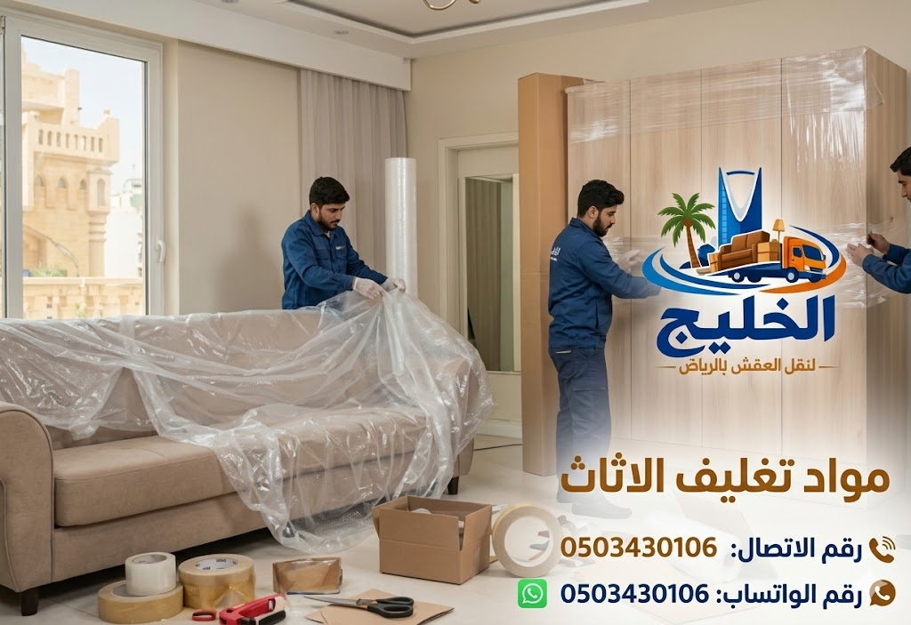

شركة نقل عفش شرق الرياض
تُعد مؤسسة الخليج خيارك المعتمد عند البحث عن شركة نقل عفش شرق الرياض. نقدم خدمات متكاملة تتضمن فك وتغليف ونقل وإعادة تركيب الأثاث والمطابخ والأجهزة الكهربائية بأعلى معايير الأمان، مع الاعتماد على عمالة مدربة وسيارات دينا مغلقة مجهزة.
كيان رسمي معتمد
مؤسسة رسمية بسجل تجاري 1010456789 تعتمد معايير عمل موثوقة.
فك وتركيب احترافي
نجارون وفنيون متخصصون لتفكيك وتركيب الأثاث والمطابخ بدقة.
عناية وحماية فائقة
تغليف محكم وتثبيت آمن للمنقولات لضمان سلامتها الكاملة أثناء النقل.
لماذا تختار شركة نقل عفش شرق الرياض؟
عند البحث عن شركة نقل عفش شرق الرياض، يتطلع العميل إلى أكثر من مجرد شاحنة ونقل سطحي؛ بل يبحث عن شركة متخصصة تضمن سلامة المنقولات وتلتزم بالاحترافية في المواعيد وحسن التعامل. نقدم في مؤسسة الخليج منظومة نقل متكاملة تجمع بين السرعة والأمان، وذلك من خلال:
- خبرة وكفاءة العمالة: يتألف فريقنا من فنيين وعمال مدربين على التعامل الحذر مع كافة أنواع الأثاث الخشبي، والمعدني، والأجهزة الكهربائية، مما يجعلنا افضل شركة نقل عفش بالرياض بشهادة عملائنا.
- تغليف متعدد الطبقات: اعتماد مواد تغليف عالية الجودة كالبابلز الهوائي، والكرتون المقوى، والبطاطين الواقية لحماية الأسطح من الخدوش والصدمات، مع تقديم خدمة نقل عفش مع التغليف شرق الرياض باحترافية.
- فك وتركيب متقن: نجارون متخصصون في تفكيك غرف النوم والمطابخ والمكاتب وإعادة تركيبها وضبط زواياها وتثبيتها بشكل مثالي.
- شاحنات مجهزة (دينا): أسطول من سيارات النقل المغلقة (دينا) المجهزة بروابط وحوامل داخلية لمنع حراك القطع أثناء السير.
- التزام بالمواعيد: الوصول المباشر في الوقت المحدد مع العميل وإنجاز المهمة بفعالية دون هدر للوقت.
خدمات نقل العفش في شرق الرياض
نوفر باقة شاملة من الخدمات المصممة لتلبية تطلعات الأفراد والشركات في كافة أحياء شرق الرياض:
نقل أثاث المنازل والفلل
نقل كافة محتويات المنازل والفلل السكنية، بدءاً من غرف النوم والمجالس حتى الأجهزة، مع خدمات نقل الفلل بالرياض.
نقل أثاث الشقق
خدمة متخصصة لنقل الشقق السكنية في العمائر والأبراج بشرق الرياض، مع التعامل الماهر مع السلالم الضيقة والمصاعد، انظر نقل شقق بالرياض.
فك وتركيب الأثاث
فريق من النجارين لتفكيك وتركيب الأثاث الخشبي والمكاتب، ويمكنك الاطلاع على فك وتركيب غرف النوم وكذلك خدمات فك وتركيب الأثاث.
تغليف الأثاث المحكم
خدمات تغليف بمواد حماية عالية الكفاءة للمحافظة على الأثاث، اكتشف تفاصيل تغليف الأثاث بالرياض.
نقل الأجهزة الكهربائية
نقل حذر للثلاجات والغسالات والشاشات والمكيفات بعد تغليفها بمواد عازلة لحماية دوائرها وهياكلها الخارجية.
نقل المكاتب والشركات
نقل الأثاث المكتبي، قاعات الاجتماعات، ووحدات التخزين للمؤسسات والشركات بشرق الرياض، انظر نقل المكاتب بالرياض.
نقل المطابخ في شرق الرياض
تتطلب عملية نقل المطابخ عناية خاصة ومهارة فنية عالية تختلف عن بقية أجزاء الأثاث، نظرًا لتنوع خاماتها بين الخشب والألومنيوم والـ PVC والرخام، بالإضافة إلى توصيلات الأحواض والأجهزة المدمجة. نوفر بشرق الرياض خدمة متخصصة يشرف عليها فنيون محترفون تشمل:
فك وحدات المطبخ بدقة
تفكيك الخزائن العلوية والسفلية، المفصلات، والرخام بعناية دون التسبب في تشقق أو تلف للقطع.
التعامل مع الأجزاء الحساسة والرخام
حماية أسطح الرخام الطبيعي والصناعي والواجهات الزجاجية والأحواض باستخدام الفوم والبطاطين الواقية.
تغليف قطع المطبخ وحماية الأسطح
تغليف الخزائن والأرفف بالبلاستيك الفقاعي والشرائح الكرتونية المقواة لمنع الاحتكاك أثناء التحميل والنقل.
النقل الآمن وإعادة التركيب
رص وحدات المطبخ داخل الشاحنة بشكل منظم، ثم إعادة قص وتثبيت وتعديل المقاسات في المطبخ الجديد بدقة عالية.
لمزيد من التفاصيل حول خدمات التفكيك والتركيب المتخصصة، يمكنكم الاطلاع على خدمات فك وتركيب الأثاث بالمملكة.
معرض صور خدمات نقل العفش

تغليف محكم لحماية المنقولات

فك وتركيب بواسطة نجارين محترفين

شاحنات دينا مجهزة وآمنة
دينا نقل عفش شرق الرياض
إذا كنت تبحث عن دينا نقل عفش شرق الرياض موثوقة ومجهزة، فنحن نوفر أسطولاً من شاحنات (الدينا) المغلقة ذات المقاسات المختلفة التي تناسب أحجام الأثاث المتنوعة. سياراتنا مبطنة من الداخل ومزودة بأماكن مخصصة لتثبيت القطع القابلة للكسر والأجهزة الكهربائية لضمان عدم تعرضها لأي اهتزازات أثناء سيرها في شوارع شرق الرياض. بالإضافة إلى ذلك، يقود هذه الشاحنات سائقون محترفون وعلى دراية تامة بكافة الأحياء لتوصيل العفش في أسرع وقت وبأمان تام.
مستودعات تخزين اثاث شرق الرياض
إلى جانب خدمات النقل، نقدم لعملائنا في شرق الرياض حلولاً متكاملة لتخزين الأثاث لفترات قصيرة أو طويلة. مستودعاتنا آمنة ومجهزة بأحدث أنظمة التهوية والمراقبة على مدار الساعة للحفاظ على أثاثك من الرطوبة، الحشرات، والأتربة.
أمان ومراقبة
كاميرات مراقبة وحراسة أمنية على مدار الساعة لضمان حماية ممتلكاتك.
تهوية وعزل
مستودعات معزولة حرارياً ومزودة بأنظمة تهوية لمنع الرطوبة وتلف الأخشاب.
تغليف مخصص للتخزين
تغليف مضاعف للأثاث بمواد خاصة قبل تخزينه لحمايته طوال فترة بقائه لدينا.
تعرف على المزيد عن مستودعات تخزين اثاث بالرياض وأسعار التخزين المتاحة.
كيف تتم عملية نقل العفش في شرق الرياض؟
نتبع خطوات مدروسة ومحددة لضمان تنظيم عملية النقل وانسيابيتها بدون أي عشوائية:
التواصل المعاين والتسعير
تلقي طلبك عبر الهاتف أو الواتساب وتحديد حجم الأثاث لتقديم تقييم مجاني ومحدد.
جدولة الموعد المناسب
الاتفاق على موعد بدء العمل بما يتوافق مع وقت العميل ورغبته.
الفك والتغليف الميداني
تفكيك غرف النوم والمطابخ وتغليف القطع والأجهزة والمقتنيات بمواد الحماية المناسبة.
التحميل والتثبيت بالشاحنة
رص العفش داخل سيارة الدينا المغلقة بتنسيق يضمن توازن الشحنة وحمايتها أثناء الطرق.
النقل إلى الموقع الجديد
قيادة آمنة بواسطة سائقين محترفين على معرفة تامة بشوارع وأحياء شرق الرياض.
التنزيل والتركيب والترتيب
تنزيل المنقولات وإعادة تركيب الغرف والمطابخ وترتيب القطع حسب توزيع الغرف المطلوب.
أحياء شرق الرياض التي نخدمها
نخدم عددًا من أحياء شرق الرياض والمناطق المحيطة بها، ومن بينها الأماكن التالية التي نوفر فيها تغطية سريعة ومباشرة:
أنواع الأثاث التي نقوم بنقلها بشرق الرياض
نمتلك الخبرة والأدوات اللازمة للتعامل مع مختلف أصناف الأثاث والمنقولات وتغليفها ونقلها بأسلوب يناسب طبيعة كل قطعة:
نقل غرف النوم
فك الخزائن الكبيرة (الدوالم)، الأسرة، التسريحات، والكومودينو وتغليفها بحرص لمنع خدش الخشب أو تضرر المفصلات.
نقل غرف المعيشة
تفكيك طاولات التلفزيون والمكتبات، وحماية الكنب وأطقم الجلوس بالأغطية البلاستيكية والشرائح القماشية.
نقل المجالس العربية والفاخرة
تغليف الكنب الفاخر والسجاد والستائر بحرص، لحمايتها من الغبار والأتربة والبقع أثناء التحميل والتنزيل.
نقل غرف الأطفال
تفكيك الأسرة المزدوجة والمكاتب الصغيرة وترقيم القطع لضمان سرعة ودقة التركيب في الغرفة الجديدة.
نقل المطابخ وحداتها
فك المطابخ الخشبية والألومنيوم وتغليف الخزائن والرخام بدقة وإعادة تثبيتها وتعديل مقاساتها حسب الموقع الجديد.
نقل الأجهزة الكهربائية
نقل الثلاجات والغسالات والشاشات الكبيرة والمكيفات بعد تغليفها بالفقاعات الكثيفة والفوم الواقي.
نقل المكاتب والأثاث المكتبي
فك مكاتب العمل، طاولات الاجتماعات، الكراسي الهيدروليكية، ووحدات التخزين مع تنظيم الملفات والأجهزة.
نقل الخزائن ودوالم الملابس
فك الخزائن الكبيرة متعددة الأبواب بحذر مع حفظ المفصلات والبراغي في أكياس مخصصة لإعادة التركيب المحكم.
نقل التحف والمقتنيات الحساسة
تغليف مضاعف للزجاج، النجف، والتحف باستخدام البابلز الهوائي وصناديق كرتونية مخصصة لمنع التأثر بالاهتزازات.
سيارات ومعدات نقل الأثاث
نعتمد على وسائل حديثة ومعدات مساعدة تضمن حماية الأثاث وتسهيل عمليات النقل بشرق الرياض:
- سيارات دينا مغلقة: شاحنات مخصصة لنقل الأثاث لحمايته من الغبار والحرارة والأمطار أثناء الطريق.
- أدوات فك وتركيب متطورة: معدات كهربائية ويدوية متخصصة لتفكيك وتثبيت الأثاث بدقة ودون إتلاف الأخشاب.
- مواد تغليف ممتازة: كراتين مقواة بأحجام مختلفة، فوم، رول بابلز، وبلاستيك استريتش عالي الامتداد.
- عربات تحميل يدوية: أحزمة نقل وعربات مجهزة بنوافل لتسهيل تحريك القطع الثقيلة، بالإضافة إلى إمكانية توفير ونش رفع اثاث بالرياض للأدوار المرتفعة.
أسعار نقل العفش شرق الرياض
نلتزم بالشفافية والوضوح التام في تحديد أسعار نقل الأثاث بشرق الرياض. لا نضع أسعارًا عشوائية بل يعتمد السعر العادل والمنصف على حجم وطبيعة كل مهمة نقل، ونحرص على تقديم خدمات نقل عفش بالرياض رخيص وتنافسي بجودة عالية، ونوضح لك ذلك كالتالي:
ما الذي يشمله سعر نقل العفش؟
- العمالة الفنية المتخصصة للتحميل والتنزيل.
- شاحنة النقل المغلقة (دينا) المجهزة.
- خدمات الفك والتركيب الأساسية للأثاث الخشبي.
- مواد التغليف الأساسية لحماية القطع من الأتربة والخدوش.
متى قد تزيد تكلفة النقل؟
- زيادة كمية الأثاث وعدد الغرف المراد نقلها.
- زيادة المسافة بين موقع الفك وموقع التنزيل والتركيب.
- الأدوار المرتفعة عند عدم وجود مصعد أو عند ضيق السلالم.
- الحاجة إلى تغليف إضافي مكثف للتحف والأجهزة الحساسة.
- وجود أثاث ثقيل للغاية يتطلب عمالة إضافية أو رافعات.
- الحاجة إلى أكثر من شاحنة نقل دينا أو طاقم عمل أضخم.
هل ترغب في معرفة التكلفة الدقيقة لنقل أثاثك بشرق الرياض؟
اطلب تقييمًا وعرض سعر مجاني الآنأسئلة شائعة عن نقل العفش شرق الرياض
تحدد التكلفة بناءً على كمية الأثاث، عدد الغرف، المسافة بين الموقعين، وعدد الأدوار وما إذا كان يوجد مصعد، بالإضافة إلى حجم التغليف المطلوبة. نقدم معاينة وتقييمًا مجانيًا لتحديد السعر بدقة دون أي التزام.
نعم، تشمل خدماتنا الفك والتركيب الاحترافي لجميع أنواع الأثاث الخشبي والمكتبي والمطابخ بجميع أنواعها على يد نجارين وفنيين متخصصين.
نعم، نوفر مواد تغليف متكاملة تشمل البابلز الهوائي، الكراتين المقواة، البطاطين الواقية، والشريط اللاصق لحماية الأثاث والأجهزة من الخدوش والأتربة.
بالتأكيد، يتم فك وتغليف الأجهزة الكهربائية والمطابخ بمواد عازلة لحمايتها ونقلها في دينا مجهزة وإعادة تثبيتها في الموقع الجديد بأمان.
نعم، بفضل فريق العمالة المدربة وأسطول السيارات المجهزة، ننجز معظم عمليات نقل المنازل والشقق بشرق الرياض خلال نفس اليوم وفق خطة زمنية منظمة.
نعم، نقدم خدمة النقل من شرق الرياض إلى جميع أحياء العاصمة، بالإضافة إلى خدمات النقل بين المدن كالنقل من الرياض إلى جدة وباقي مدن المملكة.
نعم، نوفر خدمات نقل جزئية لغرفة نوم واحدة، أو مجالس، أو أجهزة كهربائية معينة بشرق الرياض بأسعار متناسبة مع حجم المنقولات.
نعم، يمكنك حجز الموعد الذي يناسب جدولك عبر الاتصال المباشر أو التواصل عبر الواتساب لتأكيد فريق العمل والسيارات المجهزة في الوقت المحدد.
تستغرق الشقق السكنية في المتوسط من 3 إلى 6 ساعات شاملة الفك والتغليف والنقل والتركيب، بينما قد تستغرق الفلل الكبيرة يوماً كاملاً حسب كمية الأثاث.
نخدم عددًا من أحياء شرق الرياض والمناطق المحيطة بها، ومن بينها: حي الروضة، حي النسيم، حي إشبيلية، حي الرمال، حي الخليج، حي قرطبة، وحي المونسية.
جاهز لنقل أثاثك في شرق الرياض؟
تواصل معنا الآن للحصول على تقييم مجاني وعرض سعر دقيق، وتجربة نقل سهلة وآمنة.